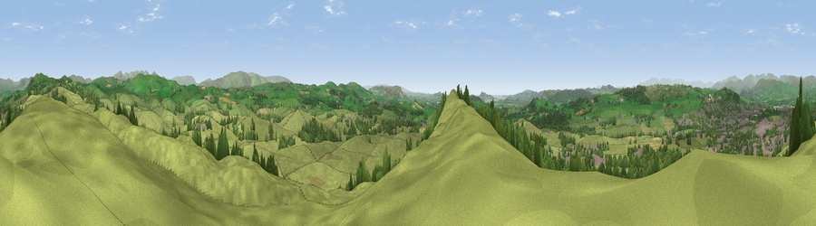

Viewpoint near Oxenholme
#7141 in England · top 29% of its area beats it · near OxenholmeWhere it is
The exact computed spot (SD 53275 89388). Click the marker for map links.
The view, rendered

A 360° render of this exact spot computed from the terrain model, tree cover and land cover — summer colours, afternoon light, calibrated against photographs of famous viewpoints. Real trees, hedges and buildings will differ in detail.
The panorama
Grey silhouette: terrain skyline in each direction (720 bearings, Earth curvature and refraction included). Dashed green: skyline with trees (+15 m) and buildings (+8 m) as obstacles. Blue strip: how far the ground is visible on each bearing.
Where the view opens
Wedge length = distance to the farthest visible ground on that bearing (vegetation-aware). Rings at 10, 25 and 50 km.
What fills the view
70% grassland · 20% woodland · 9% built-up · 1% cropland
Angular shares of the visible panorama (visual magnitude), not map area. Landscape diversity 0.37 (0–1 Shannon).
Key numbers
More beautiful places nearby
The staircase of upgrades: each row has a higher view potential than everything closer. Driving times are estimates from straight-line distance, calibrated against real road routing — check an actual route before setting out.
| Place | Direction | Drive | Score |
|---|---|---|---|
| The Helm | SSW · 1 km | ~2 min | 68.4 |
| Viewpoint near Meal Bank | NNE · 5 km | ~11 min | 75.7 |
| Scout Hill | SSE · 7 km | ~15 min | 76.5 |
| Viewpoint near Lupton | S · 9 km | ~18 min | 78.7 |
| Calf Top | ESE · 14 km | ~25 min | 79.8 |
| Viewpoint near Finsthwaite | W · 14 km | ~26 min | 84.7 |
| Viewpoint near Finsthwaite | W · 14 km | ~26 min | 90.3 |
| The Knoll | S · 401 km | ~383 min | 91.0 |
54.29795, -2.71944 · source: screening · position refined by local search. Computed location — check access rights before visiting.